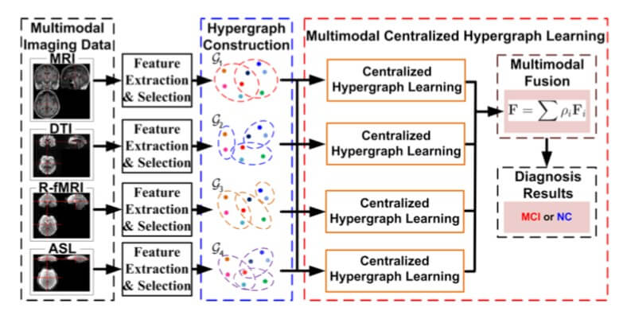
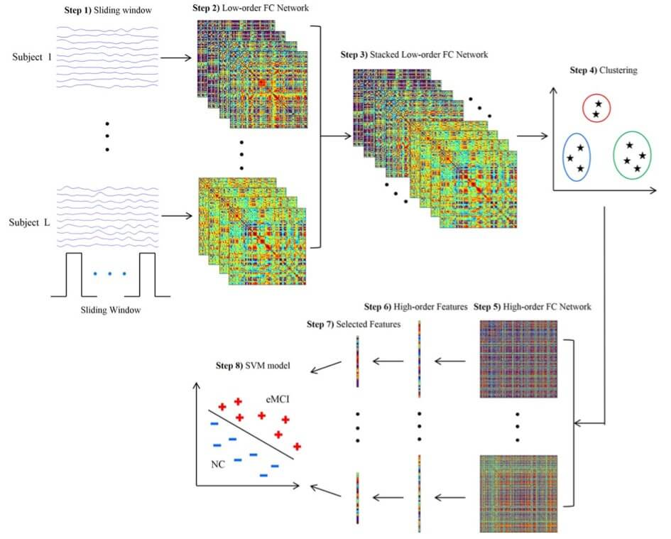
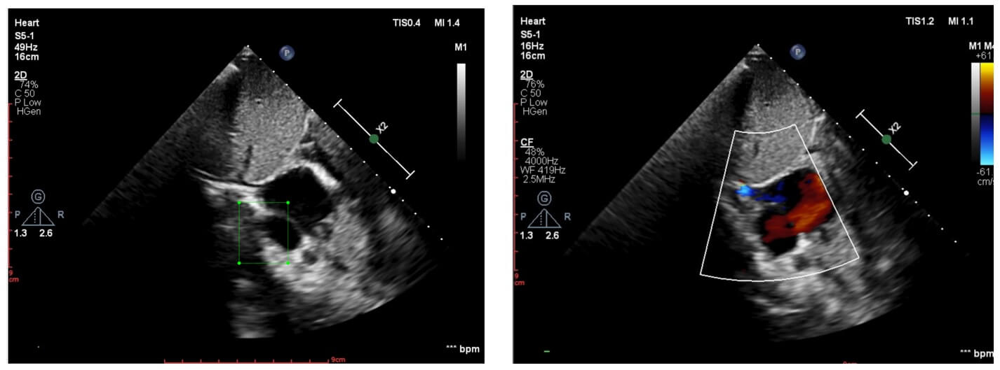
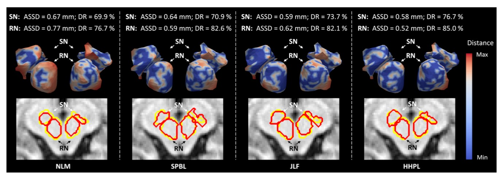

医疗影像分析¶
本部分工作主要侧重于医学图像处理和计算机辅助诊断。 在医学图像处理中，我们为脑图像分割和识别设计了快速且有效的深度学习方法。我们的研究设计了中国国家重点研发计划支持的脑出血性疾病诊断新方法，如阿尔茨海默病和心血管疾病。
脑退化疾病诊断¶
脑退化疾病，尤其是阿尔茨海默病，已经给如今的老龄化社会造成了严重的影响。然而与阿尔茨海默病的轻度认知障碍这一危险期相关的脑部轻微变化的检测仍是一个十分具有挑战性的任务。与现有的使用磁共振成像数据和正电子发射断层成像数据等多模态数据进行轻度认知障碍检测的方法不同，我们提出了一种使用T1加权成像数据、弥散张量成像数据、静息态功能磁共振数据和动脉自旋标记磁共振灌注成像数据这四种MRI序列进行检测的方法。由于这些磁共振序列可以在临床的常规扫描中捕捉大脑各个方面的结构和功能，所以可以通过融合这些序列之间的信息寻找物体间的关系。为此，我们提出了集中超图学习方法，该方法可以通过使用多种磁共振成像数据更好地建模对象之间的关系以实现更准确的轻度认知障碍诊断。
高阶脑网络¶
通过使用静息态功能磁共振估计的脑功能连接网络已经成为一种有前景的神经退化疾病精准诊断方法。然而传统的功能连接网络的本质是一个低阶网络，仅考虑了大脑区域之间的相关性。由这类网络得到的特征可以无法作为有效的生物疾病标志。为了克服这一困难，我们提取新的高阶功能连接相关性，该相关性表征了低阶相关性在不同脑区对之间的相互作用。我们通过实验验证了高阶功能连接网络在疾病诊断上的有效性。
心血管疾病诊断¶
心血管疾病诊断是医学领域中非常重要的问题。 在诊断过程中，医学图像处理和病变区域检测是人工智能应用的领域。 目前，我们研究的主要疾病包括心脏病（ASD），心室功能障碍（VSD），冠心病，脑出血和脑梗塞。
医学图像分割¶
脑解剖结构的精准分割在各种不同的神经成像应用中至关重要，例如可以将其应用在神经退化疾病的生物标志物成像研究。尽管多图谱分割技术已经在医学图像领域中取得了不错的效果，但是该方法在对对比度较差的图像进行解剖结构分割时仍有一定的局限性。为此，我们针对磁共振成像中低对比度区域的小解剖结构的分割问题，提出了使用层次超图学习的全新多图谱分割框架。我们将提出的方法与其他三个目前最优的基于块的标签融合方法在老年人脑图像中的深层灰质结构和阿尔茨海默病神经影像学倡议（ADNI）数据集中的海马体上进行分割实验，实验结果表明我们的方法有显著的提升。